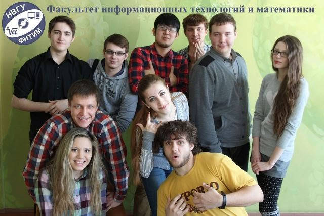

О факультете
Физико-математический факультет – хороший старт для вашего погружения в мир IT. Преподавателями являются специалисты в своей сфере. Они готовы ответить на любые интересующие вас вопросы.
Вы познакомитесь с робототехникой, создадите свой первый сайт, научитесь программировать (pascal, C, C++, C#, python), обретете навык работы с базами данных и т.д.
Факультет имеет значительные результаты в области математики, физики, информатики и методики их преподавания. Это разработки, защищенные патентами изобретений Российской Федерации и свидетельствами о регистрации интеллектуальной собственности.
Студенты ФИТиМ проходят учебные и производственные практики на базах организаций, обслуживающих нефтяную отрасль (ООО ИК «СИБИНТЕК», АСУ-нефть и др.), разрабатывающих программные комплексы для медицинских учреждений (Комтек), а также в банках и образовательных учреждениях.
Каждый может выбрать интересующее его или ее направление:
- «Информатика и вычислительная техника» поможет вам погрузиться в мир программирования.
- С «информационными системами и технологиями» вы научитесь работать с базами данных и администрированием.
- «Прикладная математика и информатика» научит вас строить математические модели.
- Педагогическое образование сделает вас образцовым преподавателем в выбранной сфере.
После обучения в ФИТиМ некоторые студенты работают в:
Если вы хотите узнать больше о жизни факультета, ждем вас в нашей официальной группе факультета
Ознакомиться с образовательными программи ФИТиМа вы можете здесь